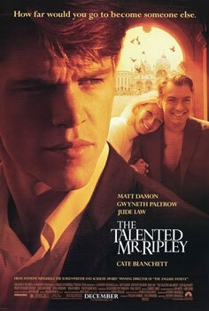
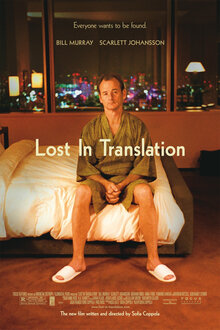
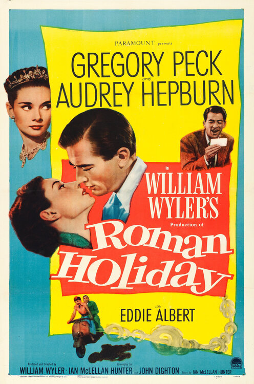
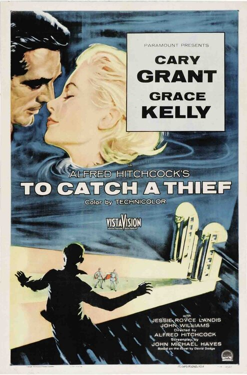
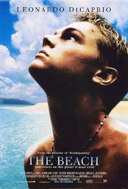
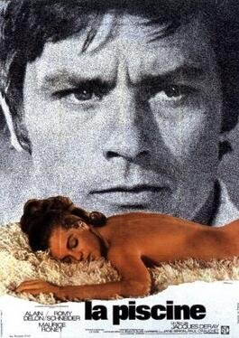
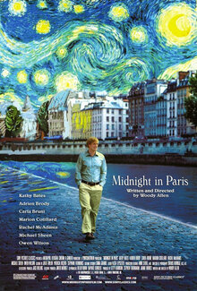
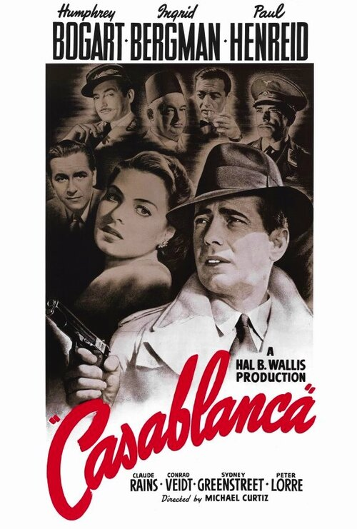

The best travel inspiration does not come from guidebooks. It comes from a mid-afternoon re-watch of a film you have seen a dozen times and the sudden conviction that you need to book a flight. Nine films, and the hotels to book when you want to step inside them — including a Thai highland property so uncannily Wes Anderson you suspect he may have designed it himself.
Cinema has always done the heavy lifting for travel imagination. Long before Instagram, it was Hitchcock who taught us what the Côte d’Azur looked like from a moving convertible, Minghella who sold us Positano as a place where nothing bad could really happen, and Sofia Coppola who taught an entire generation to book the Park Hyatt Tokyo. The hotels these films made famous are, without exception, still there. Most are still extraordinary. Here is where to book when a film has done what guidebooks cannot.
1. The Talented Mr Ripley (1999)

Minghella’s adaptation is the reason a generation of Americans know exactly what they want the Italian summer to look like. The fictional Mongibello is Ischia and Procida stitched together; Dickie’s Rome is the real Rome; the third act unfolds in a Venice that has not changed in any material way. To live inside the film, split your trip: three nights on Capri or Ischia, three in Rome, three in Venice. Stay at Le Sirenuse in Positano — not a film location, but the hotel that best embodies the film’s version of the coast, lemon-sorbet walls and all — then move on to Hotel de Russie in Rome for the secret garden that Dickie would almost certainly have borrowed without asking, and finish at the Gritti Palace on the Grand Canal, where the final act’s sense of gathering dread is, happily, absent.
2. Lost in Translation (2003)

Only one hotel to book here, and everyone knows which one. The Park Hyatt Tokyo occupies the top fourteen floors of the Kenzo Tange-designed Shinjuku Park Tower; the New York Bar on the 52nd floor is where Bill Murray orders the Suntory. Rooms from the 47th floor up look out over a Tokyo that from this height is indistinguishable from the film. Ask for a room on the Shinjuku side rather than the Mount Fuji side — the Fuji view is more celebrated but the city view is what you came for. Extend the trip to Kyoto (where Scarlett Johansson visits the shrines) and stay at Aman Kyoto, which is the closest thing to emotional decompression money can buy.
3. Roman Holiday (1953)

Audrey Hepburn’s princess sleeps in an embassy bed, but you can do better. Book the Hotel Hassler at the top of the Spanish Steps — it is the hotel Hepburn would have stayed in if she had been allowed to choose — and spend the first morning walking down the steps with a gelato, because refusing to do this is a kind of philistinism. Rent a Vespa (legally, please) from one of the many outfits near Piazza del Popolo. The Hotel de Russie is the more fashionable option for anyone who prefers the Borghese Gardens side of Rome to the tourist-thick Piazza di Spagna, and its secret garden courtyard is the city’s best-kept outdoor room.
4. To Catch a Thief (1955)

Grace Kelly met Prince Rainier of Monaco while promoting this film at the Cannes festival — a piece of trivia that tells you everything about the Côte d’Azur’s relationship to glamour. The picnic on the Grande Corniche is the most-imitated scene in travel history for good reason. Book the Grand-Hôtel du Cap-Ferrat — a Four Seasons property since 2015, but unchanged in the ways that matter — and drive the corniche with the top down at least once. La Réserve de Beaulieu and the Hôtel de Paris Monte-Carlo are the other two right answers.
5. The Grand Budapest Hotel (2014)
Anderson built the fictional Republic of Zubrowka from spa-town postcards and interwar Mitteleuropa melancholy. The closest real analogue is the Grandhotel Pupp in Karlovy Vary — the Czech spa town that inspired the film’s art direction and has been operating continuously since 1701. Go in winter when the snow and the pink facade do the rest of the work.
But the hotel that has most enthusiastically adopted the film as a design brief is Maison Mystique, in the Khao Yai highlands two hours from Bangkok. Twenty-two rooms across four “narrative worlds” — Botanical Obscura, Nocturnal Curiosities, Siren Reverie, Celestial Lullaby — with velvet walls in midnight blue and burgundy, Ottoman decorative traditions filtered through Victorian natural history, and a 70,000-square-metre garden concealing mazes and gemstone-coloured enclosures. The library becomes a jazz bar after dark. It is the single most Wes Anderson hotel in the world.
Three others earn a mention: the Four Seasons Gresham Palace in Budapest (for the Art Nouveau lobby), the Hotel Sacher in Vienna (for the pastel layer cake energy), and Aria Hotel Budapest (for the symmetry Anderson would approve of).
Maison Mystique is not Wes Anderson-inspired. It is Wes Anderson-inhabited. The symmetry, the velvet, the library-bar: you half expect Ralph Fiennes to check you in.
Juliette Marchand6. The Beach (2000)

Maya Bay was loved to death by this film. It closed for conservation between 2018 and 2022 and has since reopened with strict visitor caps — day trips only, no boats in the bay, no swimming. This is a good thing. Base yourself at Six Senses Yao Noi, thirty minutes by longtail from Phang Nga Bay, or at Amanpuri on Phuket’s west coast, and book a private longtail out to Maya Bay at dawn when the crowds are still on the catamarans. It is quieter, more responsibly done, and the limestone cliffs do not know the film ever happened.
7. La Piscine (1969)

Alain Delon and Romy Schneider conduct the most stylish mid-century marital drama ever filmed beside a private pool outside Saint-Tropez. The villa is private and will remain so. The mood is achievable. Book Lily of the Valley at La Croix-Valmer (a Philippe Starck property with a wellness focus and three swimming pools), or Villa La Coste in Provence (art, pool, Aga Khan-level architecture commissions). If you want the Saint-Tropez town proper: Cheval Blanc St-Tropez on the Baie de Canoubiers. Wear white linen. Do not argue poolside.
8. Midnight in Paris (2011)

Owen Wilson slips back into 1920s Paris at the stroke of midnight. You cannot book a time machine; you can book a neighbourhood. Stay on the Left Bank — Lutetia on Boulevard Raspail is the most storied literary hotel in the city, frequented in real life by many of the writers Wilson’s character meets in the fiction. For a palace-hotel experience that leans into the film’s version of Paris, Le Bristol on Rue du Faubourg Saint-Honoré is the right address, especially the 114 Faubourg bar at midnight. Include a day trip to Giverny and pretend Monet invited you.
9. Casablanca (1942)

Here is the secret of Casablanca: it was shot entirely in Burbank. Rick’s Café is a set. The airport is a painted backdrop. Which means Morocco is yours to imagine freely — the film is a mood rather than a map. Skip Casablanca the city (it is a working port, not a romance) and go to Marrakech instead. La Mamounia is the single most cinematic hotel in North Africa, with gardens Churchill loved enough to paint and a pool so photogenic it borders on unfair. For the kasbah fantasy, try Royal Mansour (private riad-style suites with their own courtyards). Or drive to the coast and stay at Nord-Pinus Tanger, which is as close to the Casablanca mood as real life gets — ceiling fans, palm shadows, white suits optional.
—
The thing about film travel is that it is mostly about light. These films taught us what Italian afternoon light looks like (Ripley), what neon Tokyo rain looks like (Lost in Translation), what the Côte d’Azur looks like at five o’clock in August (To Catch a Thief), and what a hotel lobby can look like when someone really means it (Grand Budapest). The hotels remain. The light is free. Book one, pack the film, and see what happens.